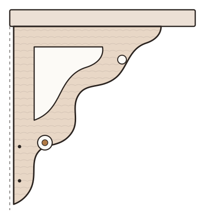
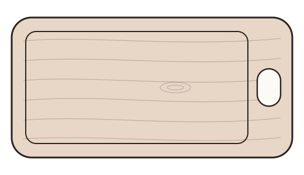

Tegnet for degDrawn for you
Du får en tegning med mål og pris før noe blir laget.You get a drawing with sizes and a price before anything is made.
WoodArc · Treverksted i BergenWoodArc · Woodshop in Bergen
Skilt, konsoller, snekkerglede og skjærefjøler i eik og furu – tegnet for deg, frest på CNC og ferdigbehandlet for hånd.Signs, brackets, decorative trim and cutting boards in oak and pine – drawn for you, cut on a CNC router and finished by hand.

Du får en tegning med mål og pris før noe blir laget.You get a drawing with sizes and a price before anything is made.
Fine detaljer i tre – ett stykk eller flere like.Fine detail in wood – one piece or several alike.
Pusset og oljet i verkstedet, klar til bruk.Sanded and oiled in the workshop, ready to use.
Hva jeg lagerWhat I make
Navneskilt, husnummer og hytteskiltName signs, house numbers and cabin signs
Ni design som kan tilpasses med ditt navn, nummer eller sted – i eik eller malmfuru, liten eller stor.Nine designs that can be changed to your name, number or place – in oak or pine heartwood, small or large.


Til gamle og nye husFor old and new houses
Knekter til hattehylle eller kjøkkenhylle, snekkerglede til veranda og gavl, og rosetter og hjørneklosser til dør og vindu – nye eller kopiert etter en gammel del.Brackets for hat shelves or kitchen shelves, decorative trim for porches and gables, and rosettes and corner blocks for doors and windows – new, or copied from an old part.
I eik, med grepIn oak, with a handle
Skjærefjøler med avrundede kanter og matsikker olje. Kan lages med navn, monogram eller logo – fint som gave.Cutting boards with rounded edges and food-safe oil. Can be made with a name, monogram or logo – a good gift.

Også fra verkstedetAlso from the workshop
Klassiske brikker i bøk – kan lages på bestilling.Classic pieces in beech – can be made to order.
Har du en idé, en skisse eller en gammel del du vil ha laget på nytt? Fortell meg om det.Have an idea, a sketch or an old part you want made again? Tell me about it.
Om verkstedetAbout the workshop
WoodArc er et lite treverksted i Bergen, drevet av en ingeniør med bakgrunn fra produksjon. Delene tegnes på data, freses ut på CNC og pusses og oljes for hånd.WoodArc is a small woodshop in Bergen, run by an engineer with a background in manufacturing. Pieces are drawn on a computer, cut on a CNC router, then sanded and oiled by hand.
Du får en tegning med mål og pris som du godkjenner før noe blir laget.You get a drawing with sizes and a price to approve before anything is made.
Delen freses ut i tre på CNC-fresen, nøyaktig etter tegningen.The piece is cut from wood on the CNC router, exactly to the drawing.
Pusset og oljet for hånd. Små detaljer på skilt kan males.Sanded and oiled by hand. Small details on signs can be painted.
La oss snakkesLet's talk
Fortell hva du tenker på, så finner vi ut av det sammen.Tell me what you're thinking, and we'll figure it out together.
woodarcdesign@gmail.com